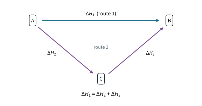
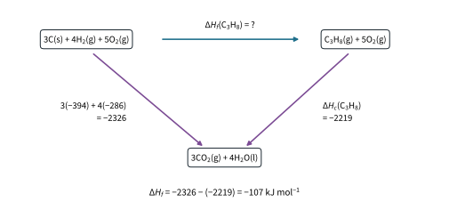
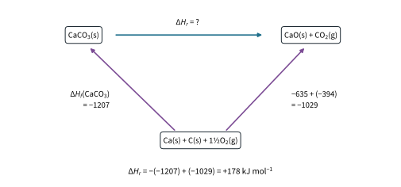
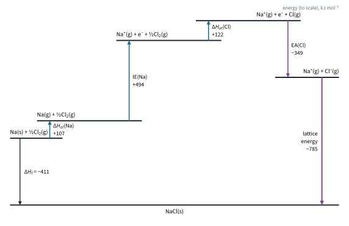
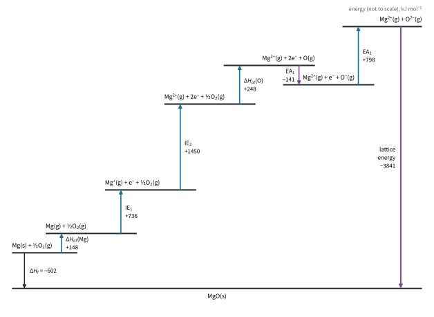
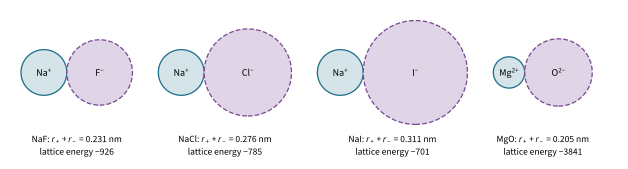
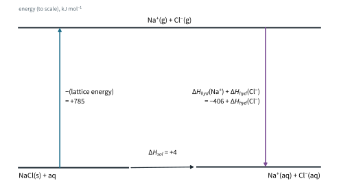

Chemical Energetics 2
Topic 7 · Chemical Energetics Part 2
On this page
Calorimetry works only for reactions that are fast, complete and clean. You cannot burn carbon and hydrogen together in a cup and collect pure propane; you cannot put sodium ions and chloride ions together in the gas phase and measure the heat as the crystal forms. This Part shows how to find enthalpy changes like these from ones that can be measured.
Hess' Law
It follows from the conservation of energy. If going from A to B by one route gave out more energy than another route, you could go there by one and back by the other and make energy from nothing. So in Fig 1, ΔH1 = ΔH2 + ΔH3.

Using an energy cycle
(This is the method for every Hess question, including Born-Haber cycles later.)
- Write the equation for the enthalpy change you want across the top, with state symbols.
- Choose a link that both sides can reach: the elements (if you are given ΔHf values) or the combustion products (if you are given ΔHc values). Write it below.
- Draw the arrows in the direction the data are defined (formation: from the elements; combustion: to the combustion products), and multiply each value by the number of moles in the equation.
- Go round from the start of the unknown to its end by the other route. Going along an arrow, add its value; going against an arrow, change its sign.
Worked example 1: enthalpy change of formation from combustion data
Use ΔHc⦵ values to find ΔHf⦵ of propane: C(graphite) −394, H2(g) −286, C3H8(g) −2219 kJ mol−1 (literature values).
(The formation reaction, 3C(s) + 4H2(g) → C3H8(g), cannot be done directly: carbon and hydrogen give a mixture of hydrocarbons. But all three substances burn, so link both sides through their combustion products.)

Going round the cycle from the elements, down to the combustion products and then up against the propane combustion arrow:
ΔHf⦵ = 3(−394) + 4(−286) − (−2219)
= −1182 − 1144 + 2219 = −107 kJ mol−1
(The literature value is −105 kJ mol−1; the small difference comes from rounding the combustion data.) The O2 needed to burn each side is the same, 5O2, so it cancels; you may leave it out of the boxes.
Short cuts
Every cycle of these two kinds can be written as a formula. Use them once you understand the cycles behind them (Σ means "the sum of", each value multiplied by its number of moles in the equation):
ΔHr⦵ = ΣΔHf⦵(products) − ΣΔHf⦵(reactants)
ΔHr⦵ = ΣΔHc⦵(reactants) − ΣΔHc⦵(products)
Note the order is reversed for combustion data, because combustion arrows point away from the substances.
Worked example 2: from enthalpy changes of formation
Calculate ΔH⦵ for the thermal decomposition of calcium carbonate: CaCO3(s) → CaO(s) + CO2(g). ΔHf⦵ / kJ mol−1: CaCO3(s) −1207, CaO(s) −635, CO2(g) −394 (literature values).

ΔH⦵ = [(−635) + (−394)] − (−1207) = +178 kJ mol−1
Endothermic, as you would expect for a decomposition that needs strong heating. (Topic 5 Part 3 compared the Group 2 carbonates by charge density; Part 3 of this topic shows why this reaction needs a temperature of around 1100 K to go.)
(Further example. The thermite reaction, 2Al(s) + Fe2O3(s) → Al2O3(s) + 2Fe(s), with ΔHf⦵(Al2O3) = −1676 and ΔHf⦵(Fe2O3) = −824 kJ mol−1: ΔH⦵ = −1676 − (−824) = −852 kJ mol−1. The elements Al and Fe count as zero. Enough heat is given out to melt the iron, which is how rails were once welded.)
Worked example 3: Hess' Law from two experiments
The hydration of anhydrous copper(II) sulfate, CuSO4(s) + 5H2O(l) → CuSO4·5H2O(s), cannot be measured directly: the solid takes up water slowly and unevenly, and you cannot stop it at exactly five water molecules. Both solids dissolve readily, though, and give the same solution:
CuSO4(s) + aq → CuSO4(aq) ΔH1 = −66 kJ mol−1
CuSO4·5H2O(s) + aq → CuSO4(aq) ΔH2 = +12 kJ mol−1
Going from the anhydrous solid to the hydrate by way of the solution, along ΔH1 and then against ΔH2:
ΔH = ΔH1 − ΔH2 = −66 − (+12) = −78 kJ mol−1
Each of ΔH1 and ΔH2 is found by calorimetry, exactly as in Part 1 (Tutorial 2 has the data).1
Bond energies
Part 1 defined bond energy as the energy needed to break 1 mol of a covalent bond in the gaseous state. For a diatomic molecule such as Cl2 or HCl it is an exact value. For a bond that appears in many different molecules, such as C–H, the strength varies a little from molecule to molecule, so the Data Booklet gives an average bond energy.2 Because bonds broken take in energy and bonds formed give it out:
ΔH = Σ(bond energies of bonds broken) − Σ(bond energies of bonds formed)
Two rules: draw the full structure of every molecule so you count every bond, and use this method only when every reactant and product is a gas (bond energies are defined for gases; a liquid would also need its enthalpy change of vaporisation).
Worked example 4
Use Data Booklet bond energies to estimate ΔH for CH4(g) + 2O2(g) → CO2(g) + 2H2O(g). Bond energies / kJ mol−1: C–H 410, O=O 496, C=O in CO2 805, O–H 460.
| Bonds broken | Energy in / kJ | Bonds formed | Energy out / kJ |
|---|---|---|---|
| 4 C–H | 4 × 410 = 1640 | 2 C=O (in CO2) | 2 × 805 = 1610 |
| 2 O=O | 2 × 496 = 992 | 4 O–H | 4 × 460 = 1840 |
| Total | 2632 | Total | 3450 |
ΔH = 2632 − 3450 = −818 kJ mol−1
The value from enthalpy changes of formation for the same equation, with water as a gas, is −803 kJ mol−1 (ΔHf⦵: CO2 −394, H2O(g) −242, CH4 −75). The two differ because average bond energies are not exactly the bond energies in these particular molecules. Note also that ΔHc⦵(CH4) = −890 kJ mol−1 is for liquid water: condensing 2 mol of steam gives out about 88 kJ more.
Worked example 5
Estimate ΔH for the Haber process, N2(g) + 3H2(g) → 2NH3(g). Bond energies / kJ mol−1: N≡N 944, H–H 436, N–H 390.
bonds broken: 944 + 3(436) = 2252 kJ
bonds formed: 6(390) = 2340 kJ (each NH3 has three N–H bonds)
ΔH = 2252 − 2340 = −88 kJ mol−1 (literature value −92)
Not every reaction is exothermic. For 2HI(g) → H2(g) + I2(g), bonds broken: 2(299) = 598 kJ; bonds formed: 436 + 151 = 587 kJ; ΔH = 598 − 587 = +11 kJ mol−1, endothermic: the H–I bonds broken are stronger, in total, than the H–H and I–I bonds formed. (This is the decomposition in the hot-needle test of Topic 5 Part 3.)
(Further example. For the hydrogenation of ethene, C2H4(g) + H2(g) → C2H6(g), only the C=C and H–H bonds break and a C–C and two C–H bonds form: ΔH = (610 + 436) − (350 + 2 × 410) = −124 kJ mol−1. From combustion data, ΔH = ΔHc(C2H4) + ΔHc(H2) − ΔHc(C2H6) = −1411 − 286 + 1560 = −137 kJ mol−1. Topic 11.1–11.3 Part 3 uses the enthalpy change of hydrogenation of benzene to measure its delocalisation.)
Lattice energy and electron affinity
Part 1 defined the lattice energy of an ionic compound as the energy released when 1 mol of the solid is formed from its gaseous ions:
Na+(g) + Cl−(g) → NaCl(s) lattice energy, ΔH < 0
Mg2+(g) + 2Cl−(g) → MgCl2(s)
It is always exothermic: oppositely charged ions attract, and the lattice is far more stable than the separated ions. It measures the strength of the ionic bonding: the more negative, the stronger. It cannot be measured directly, because you cannot make a beam of gaseous ions and condense it into a crystal in a calorimeter, so it is found from a Born-Haber cycle.3
A Born-Haber cycle needs one more quantity. The first electron affinity is the enthalpy change when 1 mol of electrons is added to 1 mol of gaseous atoms to form 1 mol of gaseous 1− ions:
Cl(g) + e− → Cl−(g) first electron affinity = −349 kJ mol−1
O(g) + e− → O−(g) first electron affinity = −141 kJ mol−1
O−(g) + e− → O2−(g) second electron affinity = +798 kJ mol−1
- First electron affinities are usually negative (exothermic): the incoming electron is attracted by the nucleus of the neutral atom, because the atom's own electrons do not fully shield the nuclear charge.
- Second electron affinities are positive (endothermic): the electron is being added to an ion that is already negative, so it is repelled, and energy must be put in to force it on.
The electron affinities used in this Part are literature values: F −328, Cl −349, Br −325, I −295, O −141 (first) and +798 (second) kJ mol−1. The Data Booklet does not list them. Ionisation energies (Topic 1 Part 2) do come from the Data Booklet.
Born-Haber cycles
A Born-Haber cycle is an energy cycle (Hess' Law) for the formation of an ionic compound. Route 1 is the enthalpy change of formation. Route 2 builds the solid step by step: turn the elements into gaseous atoms, then into gaseous ions, then let the ions come together into the lattice.
| Step (for NaCl) | Equation | ΔH⦵ / kJ mol−1 | Source |
|---|---|---|---|
| Atomise the metal | Na(s) → Na(g) | +107 | literature |
| Ionise the metal atom | Na(g) → Na+(g) + e− | +494 | Data Booklet (IE1) |
| Atomise the non-metal | ½Cl2(g) → Cl(g) | +122 | ½ × Cl–Cl, Data Booklet |
| Add the electron | Cl(g) + e− → Cl−(g) | −349 | literature (EA) |
| Form the lattice | Na+(g) + Cl−(g) → NaCl(s) | lattice energy | the unknown |
| Formation (route 1) | Na(s) + ½Cl2(g) → NaCl(s) | −411 | literature |

Worked example 6: lattice energy of sodium chloride
(By Hess' Law, route 1 = route 2. Write the sum, then solve for the lattice energy.)
ΔHf = ΔHat(Na) + IE(Na) + ΔHat(Cl) + EA(Cl) + lattice energy
−411 = 107 + 494 + 122 + (−349) + lattice energy
lattice energy = −411 − 374 = −785 kJ mol−1
(The literature value is −787 kJ mol−1; the small difference comes from the data set used.)
Worked example 7: lattice energy of magnesium oxide
Use: ΔHf⦵(MgO) −602; ΔHat⦵(Mg) +148; IE1 and IE2 of Mg +736 and +1450 (Data Booklet); O=O bond energy 496 (Data Booklet); first and second electron affinities of O −141 and +798 kJ mol−1.
(Mg must lose two electrons and O gain two, so the cycle has two ionisation steps and two electron-affinity steps. To atomise ½O2 you need ½ × 496 = +248 kJ mol−1.)

−602 = 148 + 736 + 1450 + 248 + (−141) + 798 + lattice energy
lattice energy = −602 − 3239 = −3841 kJ mol−1
Nearly five times the lattice energy of NaCl.4 The next section explains why. Notice too that forming O2− from O costs energy overall (−141 + 798 = +657 kJ mol−1); MgO exists only because its very exothermic lattice energy more than pays for this.
What decides the size of the lattice energy
Lattice energy comes from the electrostatic attraction between the ions. Two things control how strong that attraction is:
- Ionic charge: the higher the charges on the ions, the stronger the attraction, so the more exothermic the lattice energy.
- Ionic radius: the smaller the ions, the closer their centres can get (the distance between them is r+ + r−), so the stronger the attraction and the more exothermic the lattice energy.
Roughly, the size of the lattice energy goes as (charge on cation × charge on anion) / (r+ + r−). Charge has the bigger effect.5 Fig 6 and the table use Data Booklet ionic radii and the lattice energies from Born-Haber cycles.

| Compound | Charges | r+ + r− / nm | Lattice energy / kJ mol−1 |
|---|---|---|---|
| NaF | +1, −1 | 0.095 + 0.136 = 0.231 | −926 |
| NaCl | +1, −1 | 0.095 + 0.181 = 0.276 | −785 |
| NaBr | +1, −1 | 0.095 + 0.195 = 0.290 | −749 |
| NaI | +1, −1 | 0.095 + 0.216 = 0.311 | −701 |
| KCl | +1, −1 | 0.133 + 0.181 = 0.314 | −717 |
| MgO | +2, −2 | 0.065 + 0.140 = 0.205 | −3841 |
| CaO | +2, −2 | 0.099 + 0.140 = 0.239 | −3458 |
- Same charges, different sizes: from NaF to NaI the anion gets larger, the ions are further apart, and the lattice energy becomes less exothermic. KCl is less exothermic than NaCl because K+ is larger than Na+.
- Different charges: MgO and NaF have ions of similar size, but the charge product is 2 × 2 = 4 against 1 × 1 = 1: MgO's lattice energy is about four times larger.
This is why MgO melts at 2852 °C while NaCl melts at 801 °C (Topic 5 Part 1): far more energy is needed to break up the MgO lattice.
Enthalpy changes of solution and hydration
When an ionic solid dissolves, you can imagine two steps: break up the lattice into gaseous ions (which takes in the lattice energy, with its sign reversed), then hydrate the gaseous ions. By Hess' Law:
ΔHsol = −(lattice energy) + ΣΔHhyd(ions)

Hydration enthalpies are exothermic, and more exothermic for small ions and ions of high charge, because they attract the polar water molecules more strongly (Topic 5 Part 2 used the same charge-density idea). Literature values in kJ mol−1:
| Ion | Li+ | Na+ | K+ | Mg2+ | Ca2+ | F− | Cl− | Br− | I− |
|---|---|---|---|---|---|---|---|---|---|
| ΔHhyd⦵ | −519 | −406 | −322 | −1920 | −1650 | −506 | −364 | −335 | −293 |
Worked example 8
ΔHsol⦵(NaCl) = +4 kJ mol−1, its lattice energy is −785 kJ mol−1 (Worked example 6) and ΔHhyd⦵(Na+) = −406 kJ mol−1. Calculate ΔHhyd⦵(Cl−).
+4 = −(−785) + (−406) + ΔHhyd(Cl−)
ΔHhyd(Cl−) = 4 − 785 + 406 = −375 kJ mol−1
Tables give values from −364 to −381 kJ mol−1, depending on the source. ΔHsol is a small difference between two large numbers, so an error of a few kJ mol−1 in either large term changes it a lot, and can even change its sign. The sign of ΔHsol also does not, on its own, decide whether a solid dissolves: NaCl and NH4NO3 dissolve although both are endothermic. Part 3 explains why.
Summary
| Idea | Key point |
|---|---|
| Hess' Law | ΔH is independent of route. Along an arrow, add; against an arrow, change the sign. |
| Short cuts | ΔHr = ΣΔHf(products) − ΣΔHf(reactants) = ΣΔHc(reactants) − ΣΔHc(products). |
| Bond energies | ΔH = Σ(broken) − Σ(formed); gases only; average values, so an estimate. |
| Lattice energy | Gaseous ions → 1 mol solid; always negative; found from a Born-Haber cycle. |
| Electron affinity | First EA usually negative; second EA positive (electron added to a negative ion). |
| Born-Haber | ΔHf = ΔHat(metal) + IE(s) + ΔHat(non-metal) + EA(s) + lattice energy. |
| Size of lattice energy | More exothermic for higher ionic charge and smaller ionic radius. |
| Solution | ΔHsol = −(lattice energy) + ΣΔHhyd; small difference of two large numbers. |
Additional information
- Rounded literature values: ΔHsol⦵ of CuSO4(s) is about −66 and of CuSO4·5H2O(s) about +12 kJ mol−1. ↩
- Even within one molecule the four C–H bonds of CH4 take different energies to break one after another; the Data Booklet value, 410 kJ mol−1, is an average over many compounds. Bond energies are also called bond enthalpies. ↩
- Some books define lattice energy the other way round, as the energy needed to break the solid into gaseous ions (a positive value). 9476 uses the definition here: gaseous ions to solid, negative. ↩
- The literature value usually quoted for MgO is about −3800 kJ mol−1. Most of the difference comes from the second electron affinity of oxygen, which cannot be measured directly and varies between sources (about +744 to +844 kJ mol−1). ↩
- Beyond the syllabus: this is Coulomb's law, force ∝ q+q−/r2, which gives an energy ∝ q+q−/r. The syllabus asks only for the qualitative effect of charge and radius. ↩